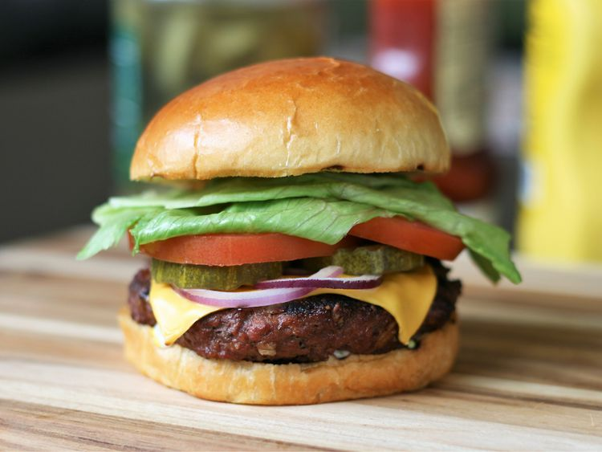

Home
Burger recipe

Description
Ingredients
- 2 pounds extra-lean ground beef
- 1 (1 ounce) package dry onion soup mix
- 1 egg, lightly beaten
- 2 teaspoons hot pepper sauce
- 2 teaspoons Worcestershire sauce
- 1 teaspoon minced garlic
- ¼ teaspoon ground black pepper
- ¾ cup rolled oats
Steps:
- Preheat an outdoor grill for medium high heat and lightly oil grate.
- In a large bowl, combine the beef, onion soup mix, egg, hot sauce and oats. Shape into 6 patties.
- Grill patties over medium high heat for 10 to 20 minutes, or to desired doneness. (54 degrees C) for medium-rare. Remove from skillet and allow to rest for 10 minutes.